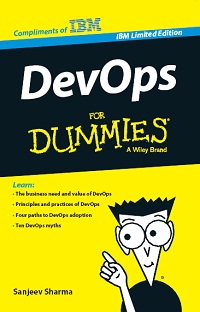

IBM y el DevOps
Hace algún tiempo busqué información sobre metodologías ágiles y DevOps para AIX. AIX se podría definir como el UNIX de IBM, aunque se trata de una definición muy vaga ya que al AIX siempre lo encontramos asociado a un hardware especifico (P-series) y a un procesador creado por IBM el POWER. Este ecosistema hacen que el sistema AIX sea unos de los sistemas más robustos. Pero lo que quería buscar era si éste modelo era ágil.
En aquel momento no encontré mucha información sobre Devops por lo que me ha sorprendido encontrar el siguiente tweet: "DevOps for Dummies: download the free ebook! http://ow.ly/q1OVG ^KS" enviado desde @developerWorks la cuenta oficial de IBM developerWorks Este libro de descarga gratuita (si dejamos nuestros datos en la página de IBM)
DevOps for Dummies es un libro escrito por Sanjeev Sharma @sd_architect aunque no lo he podido leer, ya que me lo acabo de descargar, tiene buena pinta. Después de repasarlo un poco por encima parece que no nombra herramientas ágiles sino que lo que parece que hace es explicar las metodologías para poder realizar los cambios, por lo que parece más bien un libro para hacerse a la idea que cual es la diferencia de DevOps y lo que seria el ciclo de vida del software. Un digno libro de la serie "for Dummies". Por lo que parece por el momento sólo está disponible en inglés.
Este hecho remarca la idea que tenia hace varios años, ¿cómo es posible que un sistema tan ágil como el AIX, que permite cambiar las vCPU y vRAM en caliente, no tenga herramientas ágiles y un sistema de trabajo DevOps?. Parece que ahora sí que hay interés por IBM para hacer crecer el mercado en esta linea. Seguiremos investigando.